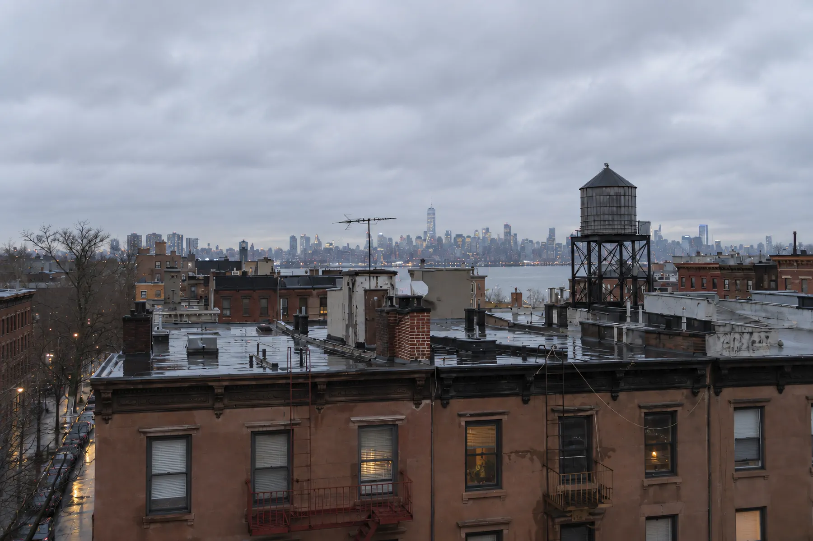
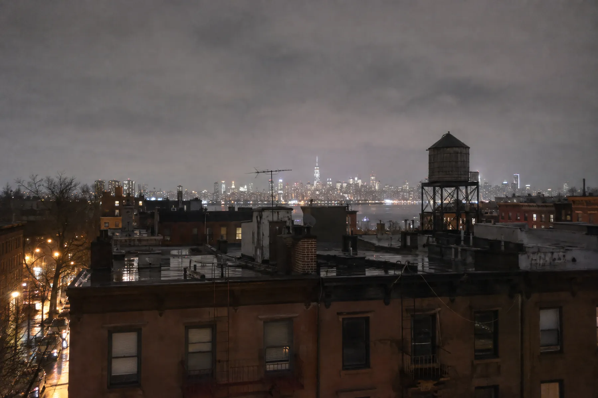
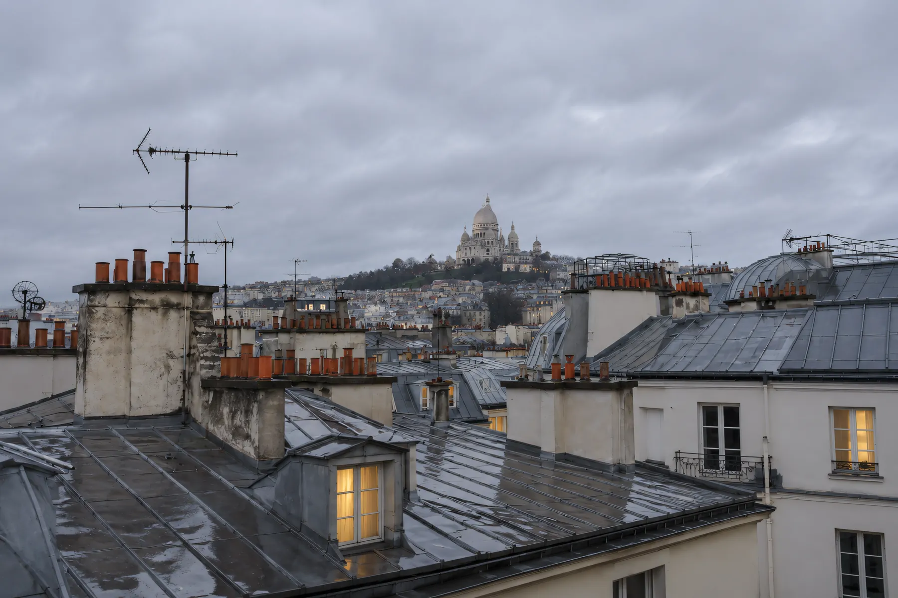
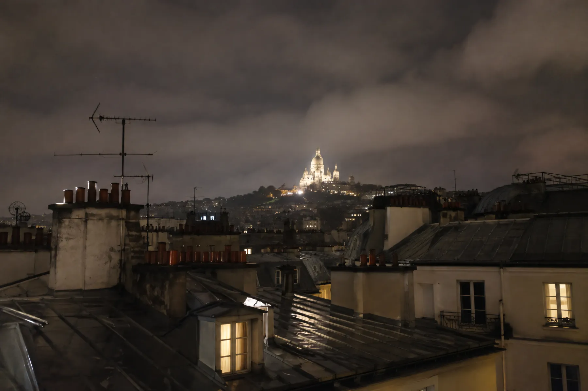
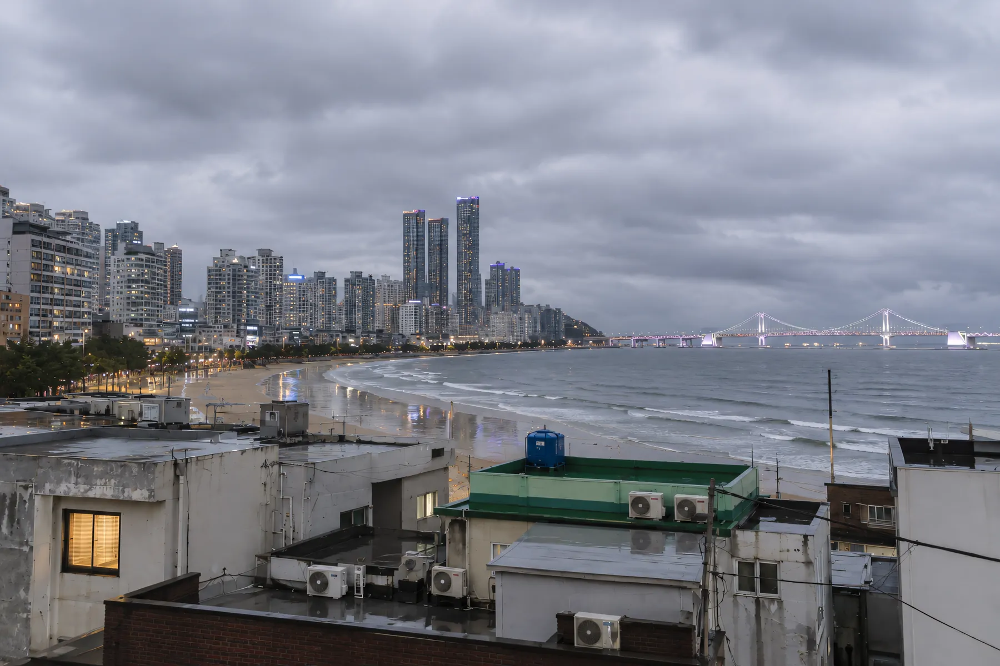
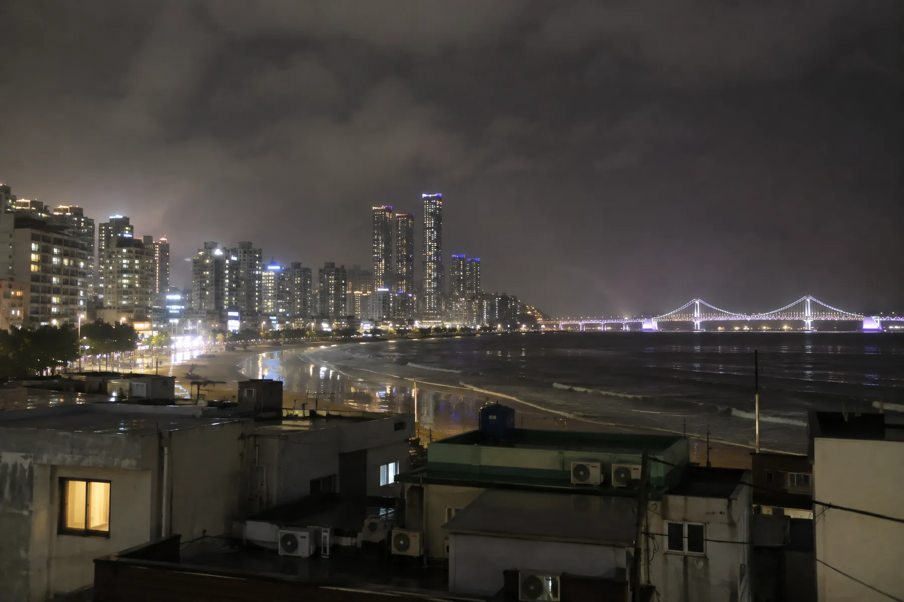
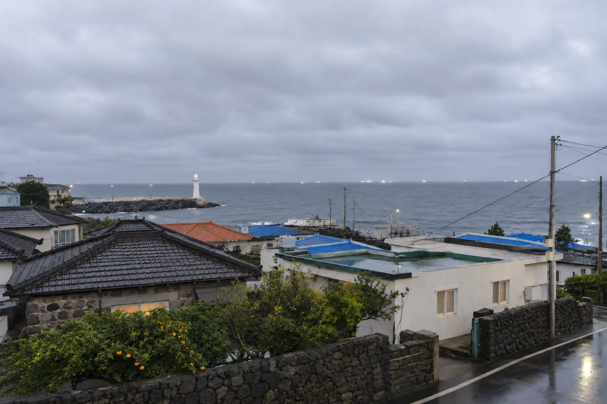
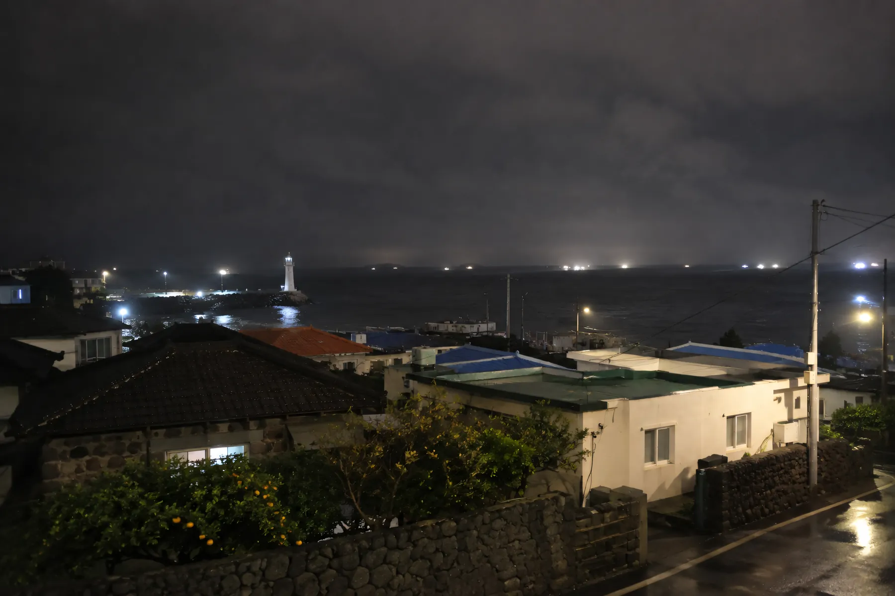

어른아이브루클린
일상

창밖의 브루클린
다방 창밖으로 본 브루클린의 낮과 밤 (예시 그림)
코르크보드에 꽂아 두는 어른아이의 사진들


다방 창밖으로 본 브루클린의 낮과 밤 (예시 그림)


다방 창밖으로 본 파리의 낮과 밤 (예시 그림)


다방 창밖으로 본 교토의 낮과 밤 (예시 그림)


다방 창밖으로 본 부산의 낮과 밤 (예시 그림)


다방 창밖으로 본 제주의 낮과 밤 (예시 그림)